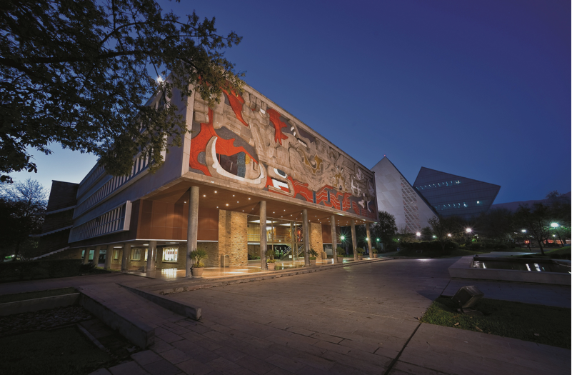

 Educating Students with Artificial Intelligence (AI) skills for the 21st century digital transformation and Industry 4.0
An AI program for the future XXI-Century institutions demand professionals with new competences and skills to tackle the challenges that digital transformation is bringing to modern society. AI technologies have permeated nearly every aspect of our daily lives including education, health, economy, government, transportation, and other sectors. The exponential growth of data generated by transactional systems, ubiquitous sensors, and the internet of things demand novel techniques to extract information and knowledge from data for meaningful decision making. The need to develop software capable of learning from data to handle moving devices including autonomous vehicles and robots, making surgeries, planning city traffic or company production, demands professionals with required capacities. Our project presents a mature program for providing experts with the solicited capabilities.
Education An undergraduate minor in Intelligent Systems launched in 1987, a master program in intelligent systems started in 1989, and a PhD program in AI initiated in 1991.
Research A Center for AI launched in 1989 staffed by 25 professors holding PhDs in various AI specialties, and three laboratories in knowledge-based systems, nature-inspired systems, and intelligent-robotics.
Conferences An AI conference-series started in 1988 and held annually since then (ISAI 1988-1999), (MICAI 2000-2018) along with training seminars in KBSs.
Industry An industry-university liaison to solve real-world problems using AI-technologies in steel, chemical, banking, and health sectors with active involvement of students, since 1987.
Internationalization An internationalization program for visits and exchange of students and professors with AI-leading universities (CMU, Stanford, Edinburgh, Rice, UT Austin, etc.) active since 1988.